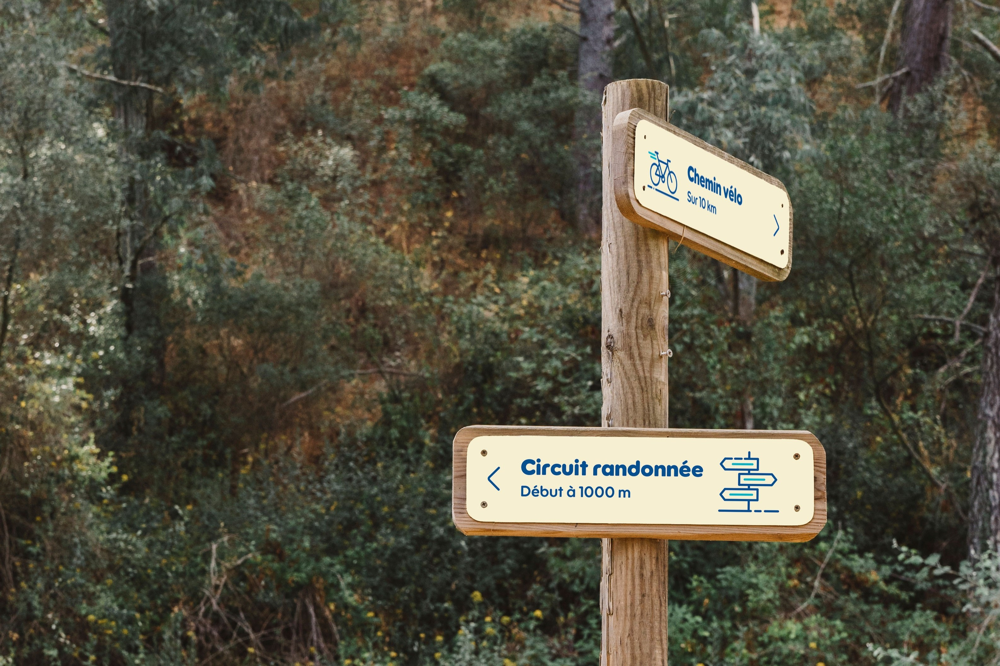

Dans le cadre d’un projet fictif réalisé durant mon master, nous avons travaillé sur la refonte de l’identité visuelle du Parc national de Port-Cros. J’ai été chargé de concevoir un ensemble d’icônes en cohérence avec l’univers graphique du nouveau logo, destinées à orienter les visiteurs au sein du parc. Ce travail s’est traduit par la création de différents panneaux de signalétique ainsi que d’un motion design présentant les activités proposées par le parc.
